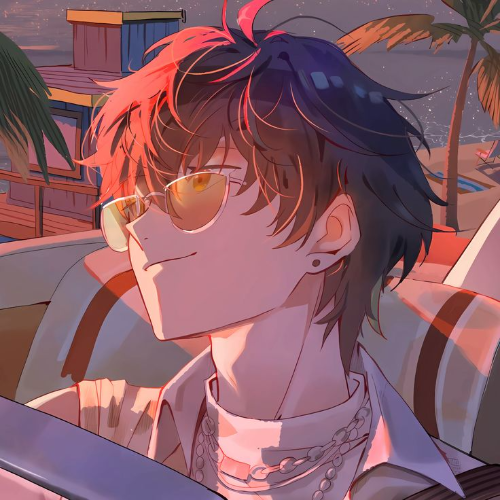
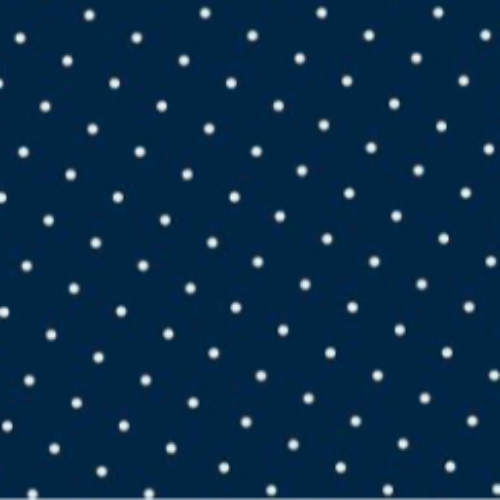
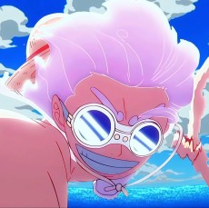

Community Hub
Join the discussion, share your art, and connect with fellow anime enthusiasts.


Hey everyone, I made a decision to make separate support system to make the community more enjoyable & more discussion focused so If you need any help or support open a ticket here
our mods or me personally will guide you to a solution
What can't you post in community from now on
- this ep is broken fix this like stuff
- this anime is missing please add it(anime will be added according to requests queue, will publish a queue page soon)
- broken features
any posts that like above ones will be removed
- feature requests are fine
& if something happens to site bookmark this page it will show you all the updates/downtimes/maintenance like stuff
- restatus .me

Its been the number 1 most requestes anime for a little bit now and i keep seeing random ahh animes being added instead
Why the subtitles are not showing in the anime and why servers are not working
Why sub titles is super late to show up is idk if just me or nah
What are some good 12 episode animes
here me out boss, if this site have a casting screen to tv's EVERY user would appreciate this site☺️ screen casting from phone is kinda laggy and delayed so it's not very enjoyable on my end😅 SO IF YOU CAN, HOPE USERS WILL GATEKEEP THIS SITE FOR IT'S OWN PROTECTION. THANKS FOR ENTERTAINING THE IDEA
idk if somethings broken on my side or whatver but why is there no f for fullscreen and why does each episode the it exits out of fullscreen and don't go back just seems so basic to not have
I'm not gay but gay guys are great because they go after other guys and so more mommy feet for me.
Recommendations ;3

I have like 2 friends that like jojos and nobody to talk to about it :( whenever I talk to my guy friends about anime they jump straight into power scaling and call me a lap if I can't point at the exact position where jotaros hair starts and his hat ends
Where is at anyone know when it gonna be loaded on the site

It would be amazing if the screen cast feature could be added cuz I like watching anime on my tv (it hits different imo) and I don't wanna really watch on a phone screen cuz it's small. This site has everything I could ask for except the screen cast feature. If that feature could be added it would be amazing. Thanks
please
Hello guys any recommendations on what i should watch i watch pretty much everything kind of anime but maybe a little recommendation would help me out
Is there a downloadable app for this site? I know some anime sites have that option
I have been watching anime on this site exclusively and I have only one thought... Why is this site taking so much of my data I live in a place with garbage Internet and I sometimes watch with my data and even with data saver on it sucked all my data so can the DEVS maybe think on how to idk make reanime not take all my data(. Not bitching just venting)
Can you please the anime Hawaii complex 🙏
It will be better if you can put all the new episode that has come today and better not to put the anime which has already been completed with new anime episode
please recommend me some anime's
I'm new here